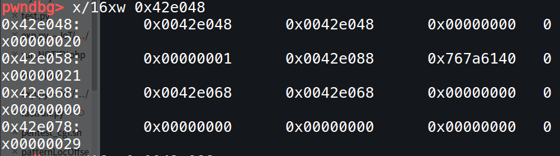
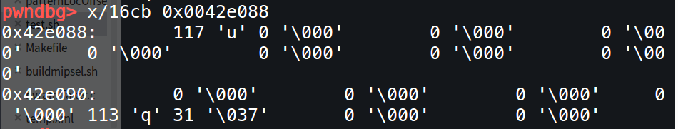
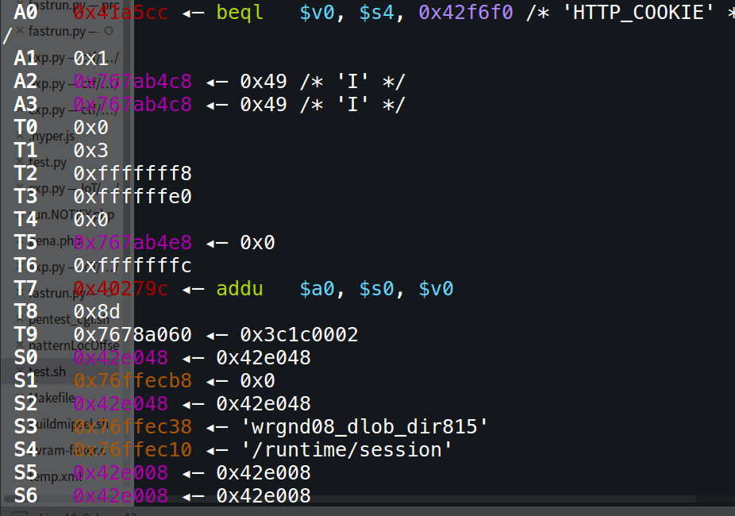
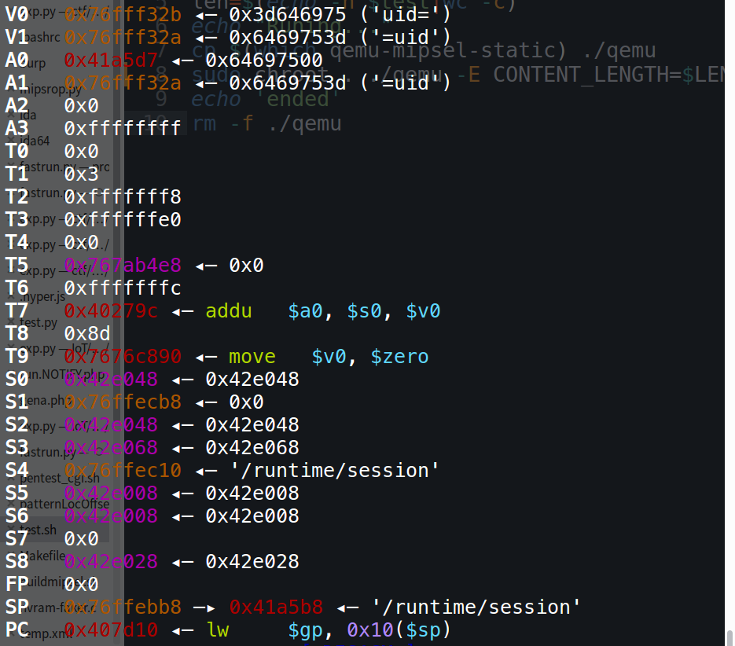
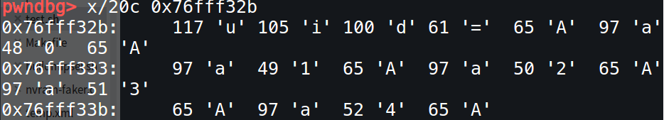
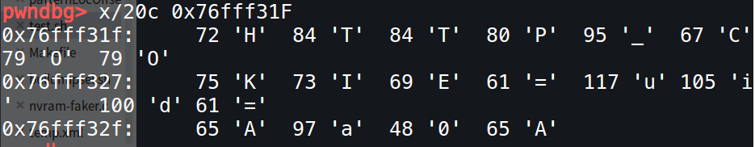

D-Link中sobj类函数逆向分析
前言
之前调试漏洞的时候都是直接根据官方公告或者别人的帖子直接定位漏洞函数，没有具体分析程序中涉及到的其他也挺重要的函数，这样看起来速度挺快，其实之后还会遇到这些函数，所以还是要仔细分析这些函数。
这次选择了D-Link路由器中的sobj类函数：sobj_new()、sobj_add_char()、sobj_strcmp()、sobj_add_string()、sobj_get_string()等进行分析。
这次分析选择D-Link DIR815固件文件系统中的./htdocs/cgibin，利用qemu的用户模式和IDA\gdb-multiarch联调一步步分析汇编源码，同时结合ghidra反汇编的伪C代码分析。
固件版本：DIR-815 FW 1.01b14_1.01b14.bin
sobj类函数
sobj_new()
void sobj_new(void)
{
void *malloc_addr;
malloc_addr = malloc(0x18);
if (pvVar1 != (void *)0x0) {
*(undefined4 *)((int)heap+ 8) = 0;
*(undefined4 *)((int)heap+ 0xc) = 0;
*(undefined4 *)((int)heap+ 0x10) = 0;
*(undefined4 *)((int)heap+ 0x14) = 0;
*(void **)((int)heap+ 4) =malloc_addr ;
*(void **)heap=malloc_addr ;
}
return;
}gdb-multiarch联调发现执行完sobj_new之后返回值放在v0中。v0 = 0x42e048
.png)
根据sobj_new函数来看出申请了0x18字节的堆空间作为结构体空间，其偏移0x0,0x4处存放对应分配的首地址。 （根据后续的分析得知：0x14处存放的是malloc/realloc返回的地址也就是申请存放字符串的堆栈空间，0x10处存放当前使用的字节数即进行拷贝过的字节数，0xc处存放*当前申请的总长度减去1字节(减去的一字节代表空字节) * ）
FUN_0040e864()
该函数在sobj_add_char()和sobj_add_string()中有调用，参数是sobj_new()申请的结构体地址。
undefined4 FUN_0040e864(int malloc_addr)
{
void *pvVar1;
int iVar2;
if (malloc_addr != 0) {
if (*(void **)(malloc_addr + 0x14) == (void *)0x0) {//如果0x14处为0
*(undefined4 *)(malloc_addr + 0xc) = 0x20;
pvVar1 = malloc(0x21);
*(void **)(malloc_addr + 0x14) = pvVar1;
}
else {
iVar2 = *(int *)(malloc_addr + 0xc);
*(int *)(malloc_addr + 0xc) = iVar2 + 0x20;
pvVar1 = realloc(*(void **)(malloc_addr + 0x14),iVar2 + 0x21);//最后一个为空字节NULL
*(void **)(malloc_addr + 0x14) = pvVar1;
}
if (*(int *)(malloc_addr + 0x14) != 0) {//还要判断上面realloc的返回地址是否为0
return 0;
}
}
return 0xffffffff;
}该函数的作用就是在sobj_new()申请的结构体0x14处malloc/remalloc一个0x21的堆空间，然后将0xc处内容加上0x20。
sobj_add_char(int malloc_addr,undefined c)
该函数的参数有两个：之前sobj_new()申请的结构体首地址malloc_addr，需要add的字符c
undefined4 sobj_add_char(int malloc_addr,undefined c)
{
int iVar1;
undefined4 uVar2;
if ((malloc_addr== 0) ||
((*(int *)(malloc_addr+ 0xc) == *(int *)(malloc_addr+ 0x10) && (iVar1 = FUN_0040e864(), iVar1 <0))))//申请的字节数等于拷贝的字节数并且申请空间失败则退出
{
uVar2 = 0xffffffff;
}
else {
iVar1 = *(int *)(malloc_addr+ 0x10) + 1;//0x10处加一
*(undefined *)(*(int *)(malloc_addr+ 0x14) + *(int *)(malloc_addr+ 0x10)) = c;//申请的堆栈空间加上新的字符串c
*(int *)(malloc_addr+ 0x10) = iVar1;
*(undefined *)(*(int *)(malloc_addr+ 0x14) + iVar1) = 0;
uVar2 = 0;
}
return uVar2;
}可以看下运行完一次sobj_add_char之后的结果:

运行玩一次之后0x10处为1,0x14处显示的申请的remalloc/malloc的地址，0xc处显示的0x20。

并且0x14处的堆地址空间内添加了第一个字符’u’。
sobj_add_string()
该函数的参数有两个：目的字符串地址deststr也是sobj_new()申请的结构体地址，需要add的字符串地址sourcestr
undefined4 sobj_add_string(int deststr,char *sourcestr)
{
size_t len_of_source;
int iVar1;
undefined4 len_of_return;
if (deststr == 0) {
len_of_return = 0xffffffff;
}
else {
len_of_return = 0;
if (sourcestr != (char *)0x0) {
len_of_source = strlen(sourcestr); //获取的第二个参数的长度
if (len_of_source == 0) {
len_of_return = 0;
}
else {
do { //如果需要拷贝的字符串长度小于0xc（总长度）-0x10（已经拷贝过的长度），直接strcpy即可
if (len_of_source <= (uint)(*(int *)(deststr + 0xc) - *(int *)(deststr + 0x10))) {
strcpy((char *)(*(int *)(deststr + 0x14) + *(int *)(deststr + 0x10)),sourcestr);
*(int *)(deststr + 0x10) = *(int *)(deststr + 0x10) + len_of_source;
return 0;
}
iVar1 = FUN_0040e864(deststr);//否则不断申请加0x20直到能够strcpy，每次成功都是返回ivar = 0
len_of_return = 0xffffffff;
} while (-1 < iVar1);//如果上面的FUN_0040e864(deststr)出错ivar=-1
}
}
}
return len_of_return;
}所以通过继续分析sobj_add_string/sobj_add_char函数得知，其sobj_new返回的结构体中0x10存放当前使用的字节数即进行拷贝过的字节数，0xc处存放当前申请的总长度减去1字节(代表空字节)，0x14存放malloc/realloc返回的地址也就是申请存放字符串的堆栈空间，而且每次会将需求拷贝字符串的长度与总长度减去已用长度得到可用长度进行比较决定是否需要再次申请空间，而strcpy的deststr为malloc/remalloc分配的地址加上已用字节数得到。
sobj_free(int param_1)
该函数只有一个参数就是sobj_new()的结构体地址
undefined4 sobj_free(int param_1)
{
undefined4 uVar1;
uVar1 = 0xffffffff;
if (param_1 != 0) {
if (*(void **)(param_1 + 0x14) != (void *)0x0) {//先看0x14上申请的堆空间是否为空
free(*(void **)(param_1 + 0x14));//不为空释放
}
*(undefined4 *)(param_1 + 8) = 0;
*(undefined4 *)(param_1 + 0x14) = 0;
*(undefined4 *)(param_1 + 0xc) = 0;
*(undefined4 *)(param_1 + 0x10) = 0;
uVar1 = 0;
}
return uVar1;
}没什么好说的释放空间并清0
sobj_del(void *param_1)
该函数只有一个参数就是sobj_new()的结构体地址
void sobj_del(void *param_1)
{
if (param_1 != (void *)0x0) {
if (*(void **)((int)param_1 + 0x14) != (void *)0x0) {
free(*(void **)((int)param_1 + 0x14));
}
/* WARNING: Could not recover jumptable at 0x0040e77c. Too many branches */
/* WARNING: Treating indirect jump as call */
free(param_1);
return;
}
return;
}清空sobj_new()的0x14处的堆，之后再清空自身。
sobj_strcmp(string_new,&DAT_0041a5d8)
该函数有两个参数：string_new是sobj_new()的结构体地址，&DAT_0041a5d8是’uid’的地址。Ghidra反汇编结果如下：
undefined4 sobj_strcmp(int param_1)
{
undefined4 uVar1;
int iVar2;
if (param_1 != 0) {
iVar2 = *(int *)(param_1 + 0x14);
if (iVar2 == 0) {
iVar2 = 0x419b10;
}
(*(code *)(undefined *)0x0)(iVar2);
(*(code *)(undefined *)0x0)();
(*(code *)(undefined *)0x0)();
(*(code *)(undefined *)0x0)();
(*(code *)(undefined *)0x0)();
(*(code *)(undefined *)0x0)();
(*(code *)(undefined *)0x0)();
(*(code *)(undefined *)0x0)();
(*(code *)(undefined *)0x0)();
(*(code *)(undefined *)0x0)();
(*(code *)(undefined *)0x0)();
uVar1 = (*(code *)&SUB_00402290)();
return uVar1;
}
return 0xffffffff;
}反汇编结果不好，直接看下面MIPS汇编代码分析：
.text:0040E4B0 # sess_get_uid+234p
.text:0040E4B0 # DATA XREF: ...
.text:0040E4B0 lui $gp, 0x43 # 'C'
.text:0040E4B4 bnez $a0, loc_40E4C4 //第一个参数也就是string_new不为0则跳转
.text:0040E4B8 li $gp, 0x4346D0
.text:0040E4BC jr $ra
.text:0040E4C0 li $v0, 0xFFFFFFFF
.text:0040E4C4 # ---------------------------------------------------------------------------
.text:0040E4C4
.text:0040E4C4 loc_40E4C4: # CODE XREF: sobj_strcmp+4j
.text:0040E4C4 lw $a0, 0x14($a0) //获取string_ new0x14处的内容也就是字符串的内容
.text:0040E4C8 nop
.text:0040E4CC bnez $a0, loc_40E4D8//0x14处不为0则跳转loc_40E4D8
.text:0040E4D0 lui $v0, 0x42 # 'B'
.text:0040E4D4 addiu $a0, $v0, (aHttp1_1301Move+0x30 - 0x420000) # s1
.text:0040E4D8
.text:0040E4D8 loc_40E4D8: # CODE XREF: sobj_strcmp+1Cj
.text:0040E4D8 la $t9, strcmp //进入strcmp进行比较
.text:0040E4DC nop
.text:0040E4E0 jr $t9 ; strcmp
.text:0040E4E4 nop该函数的作用比较string_new的0x14处的字符串是否=’uid’。
sobj_get_string(int param_1)
该函数的参数只有一个是sobj_new()申请结构体的地址
int sobj_get_string(int param_1)
{
int iVar1;
iVar1 = 0;
if ((param_1 != 0) && (iVar1 = *(int *)(param_1 + 0x14), iVar1 == 0)) {
iVar1 = 0x419b10;
}
return iVar1;
}汇编代码：
.globl sobj_get_string
.text:0040E1CC sobj_get_string: # CODE XREF: sub_403794+8Cp
.text:0040E1CC # sub_403BC8+4FCp ...
.text:0040E1CC beqz $a0, locret_40E1EC //为0跳转0x40E1EC
.text:0040E1D0 move $v1, $zero
.text:0040E1D4 lw $v0, 0x14($a0) //将0x14处的地址赋给v0
.text:0040E1D8 nop
.text:0040E1DC bnez $v0, locret_40E1EC
.text:0040E1E0 move $v1, $v0 //v0给v1
.text:0040E1E4 lui $v0, 0x42 # 'B'
.text:0040E1E8 addiu $v1, $v0, (aHttp1_1301Move+0x30 - 0x420000) # ""
.text:0040E1EC
.text:0040E1EC locret_40E1EC: # CODE XREF: sobj_get_stringj
.text:0040E1EC # sobj_get_string+10j
.text:0040E1EC jr $ra //v1给v0，然后出去了返回值就是v0
.text:0040E1F0 move $v0, $v1
.text:0040E1F0 # End of function sobj_get_string可以看出该函数的作用是获取参数（sobj_new()中0x14处的堆）的字符串,返回值是v0=sobj_new()中0x14的值。
getenv()
从环境变量中获取对应值：例如getenv(“HTTP_COOKIE”)则函数返回值v0中存放着返回的HTTP_COOKIE=之后的‘uid=xxxxxx’
例如运行前a0是参数是0x41A5cc(0x41a5cc存放的就是字符串’HTTP_COOKIE’)

getenv()运行完了之后返回结果存放在V0处

V0=0x76fff32b

往前一些可以看到0x76fff31f中明显可以看到HTTP_COOKIE=uid=xxxx

getenv()也就是将环境变量=之后的内容取出
sess_get_uid(undefined4 param_1)
最后整体分析一下sess_get_uid()函数，该函数的参数是上一个sobj_new()的结构体地址
void sess_get_uid(undefined4 param_1)
{
//param_1 = a0 = s5 = 0x42e008是sess_get_uid()上一个sobj_new()的返回值
int string_new;
char *strings_new_addr;
char *http_cookie;
undefined4 uVar1;
int iVar1;
char *pcVar2;
int http_cookie_addr;
uint flag;
undefined *pcVar3;
string_new = sobj_new();//运行完第一次sobj_new()，v0 = 0x42e048并s2 = v0 = 0x42e048
strings_new_addr = (char *)sobj_new();//第二次运行完sobj_new()，v0 = 0x42e068
http_cookie = getenv("HTTP_COOKIE");//v0= 'uid=' 将HTTP_COOKIE=后面的值取出，s3 = v0
if (((string_new != 0) && (strings_new_addr != (char *)0x0)) && (http_cookie != (char *)0x0)) {
flag = 0;//第一个状态
LAB_00407e28:
http_cookie_addr = (int)*http_cookie;
if (http_cookie_addr == 0) goto LAB_00407ec4;//如果达到结尾/x00处的时候进入0x407ec4
if (flag == 1) {
LAB_00407db0:
if (http_cookie_addr == 0x3b) {//第一个状态之后进入此处判断是否为';'
flag = 0;
}
else {
/* 遇到= */
flag = 2;//当遇到'='号时，flag = 2 进入第三个状态
if (http_cookie_addr != 0x3d) {//如果也不是等号就将字符放入第一个sobj_new生成的0x42e048对应的0x14申请的堆空间存储
sobj_add_char(string_new,http_cookie_addr);
flag = 1;//并且将状态标准转化为1进入第二个状态，然后一直加直到把'uid'加进去，遇到等号之后直接跳到LAB_00407e24，跳过'='
}
}
}
else {
if (flag < 2) {
if (flag == 0) {//第一个进入的状态
if (http_cookie_addr != 0x20) {
sobj_free(string_new);//将s2 = 0x42e048也就是第一次sobj_new生成结构体中的0x14处的堆释放掉并清0
sobj_free(strings_new_addr);//将s3 = 0x42e068也就是第二次sobj_new生成结构体中的0x14处的堆释放掉并清0
goto LAB_00407db0;
}
goto LAB_00407e24;
}
http_cookie = http_cookie + 1;
goto LAB_00407e28;
}
if (flag == 2) {//进入第三个状态
/* 遇到=后紧接着遇到; */
if (http_cookie_addr == 0x3b) {//遇到分号进入状态四
flag = 3;
goto LAB_00407e24;
}
sobj_add_char(strings_new_addr,http_cookie_addr);//将uid=之后内容存入s3 = 0x42e068也就是第二次sobj_new生成结构体中的0x14处的堆中，将不等于';'的字符全部输入
http_cookie = http_cookie + 1;
goto LAB_00407e28;
}
/* 遇到分号之后比较是否当前字符串是否是uid= */
if (flag == 3) {//进入状态四，比较第一次sobj_new()的s2 = 0x42e048中0x14处的内容是不是'uid'
iVar1 = sobj_strcmp(string_new,&DAT_0041a5d8);
flag = 0;
if (iVar1 != 0) goto LAB_00407e24;
goto LAB_00407e40;
}
}
LAB_00407e24:
http_cookie = http_cookie + 1;
goto LAB_00407e28;
}
LAB_00407ee0:
pcVar3 = getenv;
pcVar2 = "REMOTE_ADDR";
LAB_00407e48:
uVar1 = (*pcVar3)(pcVar2);//sobj_get_string(strings_new_addr)获取第二次运行完sobj_new()，s3 = v0 = 0x42e068中0x14处堆中的字符串
sobj_add_string(param_1,uVar1);//将得到字符串拷贝到param_1 = s5 = 0x42e008是sess_get_uid()上一个sobj_new()的0x14处堆空间中
if (string_new != 0) {
sobj_del(string_new);
}
if (strings_new_addr != (char *)0x0) {
/* WARNING: Could not recover jumptable at 0x00407ebc. Too many branches */
/* WARNING: Treating indirect jump as call */
sobj_del(strings_new_addr);
return;//
}
return;
LAB_00407ec4:
iVar1 = sobj_strcmp(string_new,&DAT_0041a5d8);//进入状态四，比较第一次sobj_new()的s2 = 0x42e048中0x14处的内容是不是'uid'
if (iVar1 == 0) {
LAB_00407e40:
pcVar3 = sobj_get_string;
pcVar2 = strings_new_addr;
goto LAB_00407e48;
}
goto LAB_00407ee0;
}纵观整个函数的功能就是将uid=后面的内容拷贝到param_1的0x14处的堆地址空间。函数的参数是之前sobj_new()申请的结构体地址，地址存储在s5寄存器中，进入函数之后又存储在了s6中。
完整的流程是：
首先通过两次sobj_new()申请两个结构体并将地址分别存储在s2,s3中。之后利用getenv()将环境变量”HTTP_COOKIE”中的内容也就是’uid=xxxx’字符串的地址放在v0中，紧接着s1=0，s5=0x3b(分号’;’)，s7=0x20(空格’ ‘)其中寄存器s1中存着的是状态标志，不同状态标志进行不同的处理。
s1=0标志着初始状态也就是第一个状态，先判断HTTP_COOKIE环境变量中第一个字符是否是空格，是空格则跳过继续判断，不是空格则先通过sobj_free()将sobj_new()申请的结构体0x14处的堆free并清0。跳转到0x00407db0判断不为0x3b(分号；)，继续判断是否0x3d(等号)，如果都不是，则将该字符通过sobj_add_char()存储在s2中0x14处的堆中，并将s1=1，标志着进入第二个状态。
s1=1第二个状态，不断读取字符串内容直到遇到0x3d(等号)，遇到等号则跳过等号并且s1=2，进入第三个状态。正常而言结束第二个状态时s2+0x14中应该存储的是’uid’。
s1=2第三个状态，将’uid=’之后的字符串内容通过sobj_add_char()存储在s3中0x14处的堆中。如果遇到字符等于0x3b(分号)则将s1=3进入第四个状态，正常结束状态是到遇到结束字符’\x00’处。
s1=3第四个状态，比较s2 = 0x42e048中0x14处的内容是不是’uid’。不是则跳过该字符，并且s1=0重新开始。如果s2 = 0x42e048中0x14处的内容是’uid’。则通过sobj_get_string()将s3中0x14处堆的字符串地址作为返回值给v0。
之后通过sobj_add_string()将v0的内容给s6的0x14处。到此完成了uid中的内容的获取。最后就是利用sobj_del()将s2、s3中的内容给释放并清空。
函数返回时，uid的内容存储在之前sobj_new()的结构体s5=0x42e008的0x14处。
总结
其实这算第一次这样仔细的阅读并调试汇编源码（虽然还是借助了ghidra的反汇编功能进行理解），我还是太菜了，导致整个过程还是花了挺多时间的，但是现在看来感觉还是挺值的，因为整个流程下来我对MIPS汇编代码理解以及寄存器的使用还有gdb、IDA的联调有了相对熟练的掌握，为以后静态和动态分析开一个好头吧！然后这篇文章的目的也是为了整理梳理整个思路然后以文字的形式记录下来。